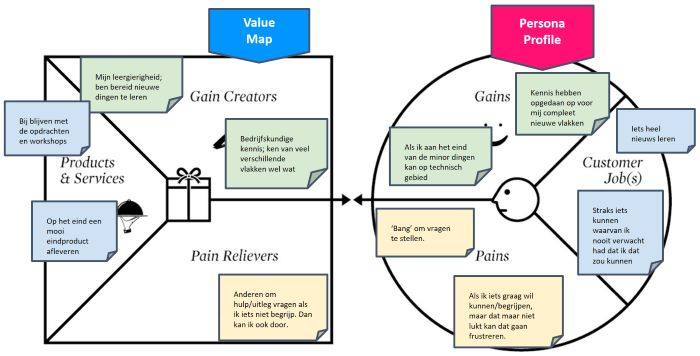

Week 1
In deze week ging het erover waarom ik deze minor heb gekozen, wat ik uit deze minor wil halen, wat succes voor mij is en wat dit succes eventueel in de weg zou kunnen staan. Allereerst is er een Persona Profile en Value Map gemaakt, en op basis hiervan is een vlog gemaakt.
Persona Profile en Value Map:

Vlog:
Ga terug naar 'Smart Business' Ga naar volgend artikel